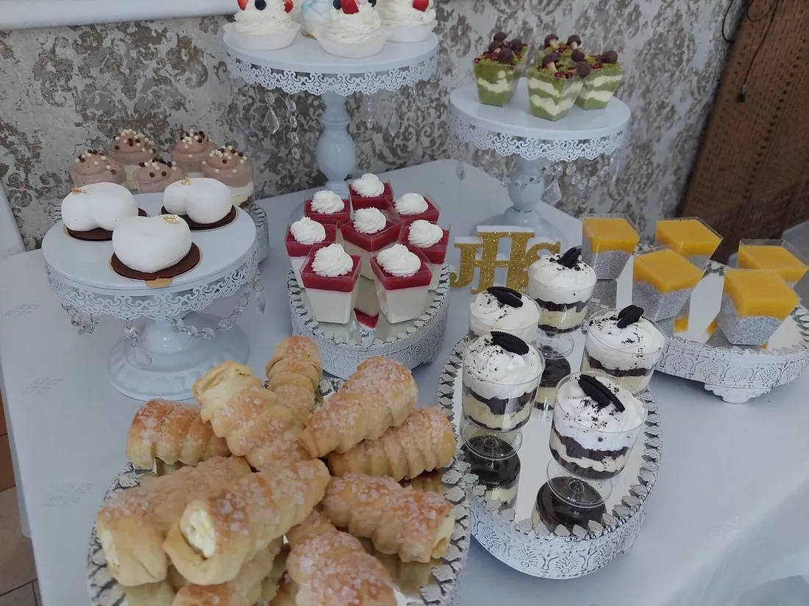
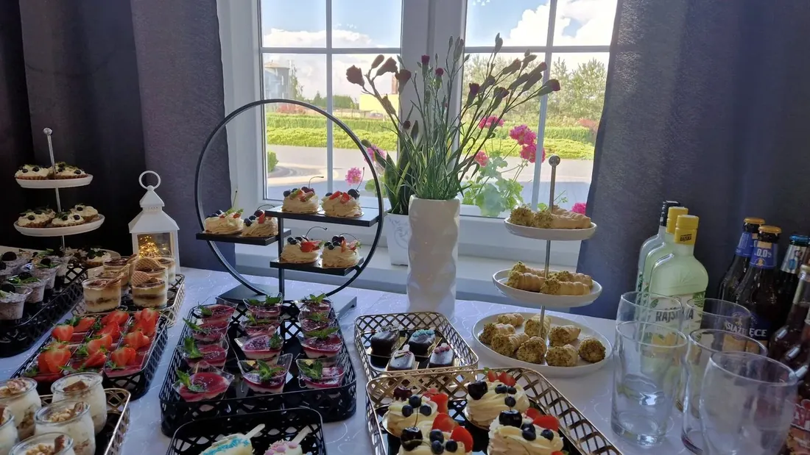

Turek i okolice · menu 2026
Menu cateringowe 2026
Te same dania, które podajemy na weselach – na urodziny w domu, spotkanie firmowe albo rodzinny obiad. Od 5 do 100 osób, z dowozem lub odbiorem w sali.

| Zamówienia | przyjmujemy do środy |
|---|---|
| Odbiór | własny w sali albo z dowozem (dopłata) |
| Dowóz gratis | do 5 km przy zamówieniu od 300 zł |
| Telefon | 665 188 619 · 601 637 397 |
Menu cateringowe 2026
Wybierz dania i wyślij zamówienie
Dodaj pozycje przyciskiem +, a suma policzy się sama. Zamówienie wyślesz SMS-em albo mailem – potwierdzimy je telefonicznie.
Deserki na słodki stół – od 9 zł za sztukę, zamówienie telefonicznie.
Pytania
Zamawianie i dowóz
Do kiedy trzeba złożyć zamówienie?
Zamówienia przyjmujemy do środy. Świąteczne – na Wigilię i Wielkanoc – warto składać z kilkutygodniowym wyprzedzeniem.
Czy dowozicie catering?
Tak, z dopłatą za dowóz. Do 5 km dowozimy gratis przy zamówieniu od 300 zł. Możesz też odebrać zamówienie osobiście w sali.
Dokąd dowozicie?
Turek i okolice, m.in. Brudzew, Tuliszków, Dobra, Malanów, Kawęczyn, Przykona, Uniejów, Koło i Konin. Przy większych zamówieniach dowozimy też dalej.
Na ile osób przygotujecie catering?
Od 5 do 100 osób. Przy większych przyjęciach pomożemy dobrać ilości do liczby gości.
Czy uwzględniacie diety?
Tak – dania wegetariańskie i bez alergenów przygotujemy po wcześniejszym uzgodnieniu.

Opinie gości
Co piszą po przyjęciu
Ocena „doskonała” na podstawie 300 opinii w Google.
Zamówiony udziec z dodatkami dla 20 osób plus kilka sałatek na zimno – pierwsza klasa wykonanie, bardzo smaczne, każdy gość zadowolony. Na pewno powtórzę zamówienie.
Catering na czas, wszystko ciepłe i pyszne. Polecam!
Robiliśmy u Państwa niejedną imprezę i jak zawsze jesteśmy bardzo zadowoleni. Jedzenie przepyszne, dużo i te wasze devolaje. Z cateringu również jesteśmy zadowoleni – przede wszystkim ciepły.